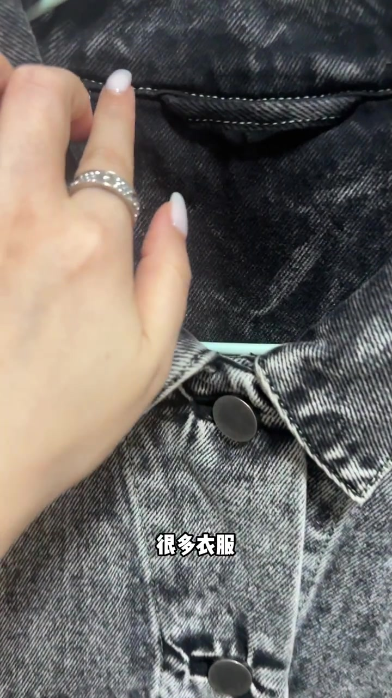
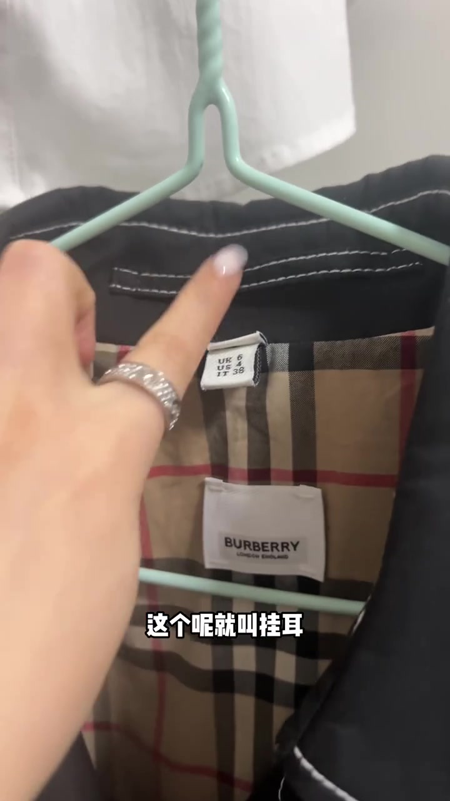
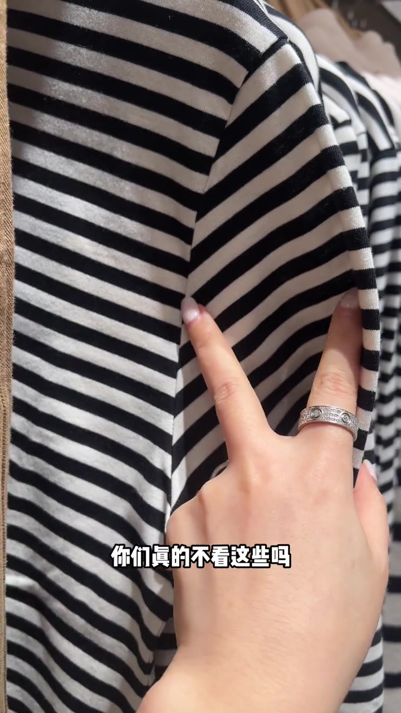
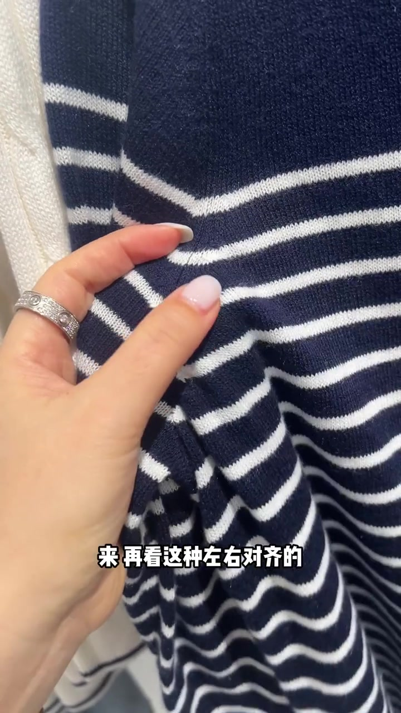
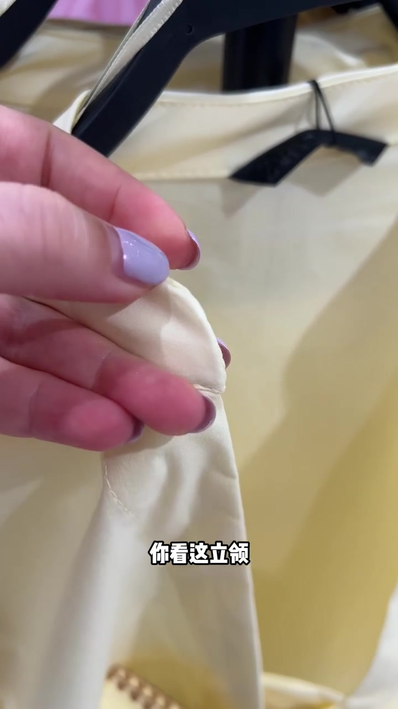
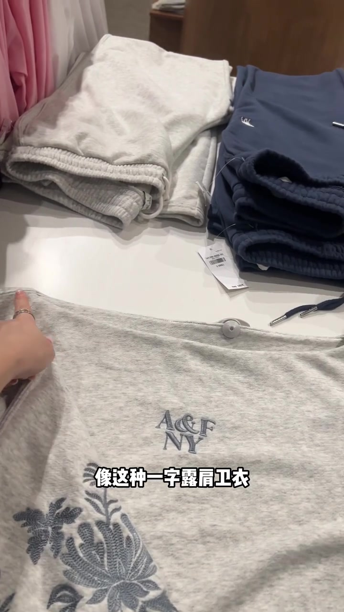
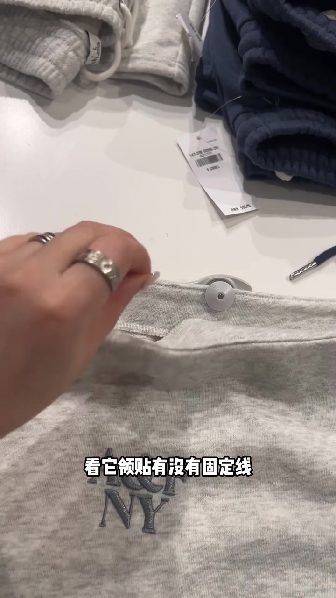
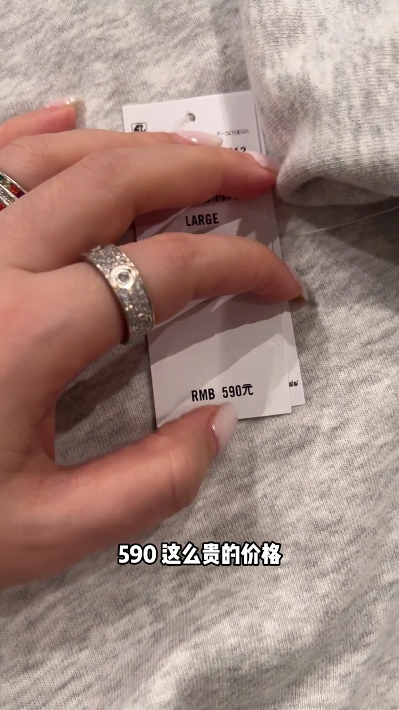

开场：后领那条小绳叫挂耳
主讲人先把镜头怼到牛仔外套后领内侧：手指点着一条小绳，问大家是不是经常能看到。接着切到风衣内里——格纹衬里、品牌标旁的扁平绳子——字幕落下“这个呢就叫挂耳”。
她解释挂耳主要用于悬挂衣服，防止滑落或变形，而且“比较注重细节的衣服上才会出现”。画面里手指钩住牛仔外套的挂耳，字幕写“防止滑落或者变形”。整段语气轻松，像在店里随手翻衣架给朋友看。
可见字幕校正：Whisper 对挂耳一段基本准确。后续“错位到姥姥家”“立领”“一字露肩卫衣”“细节决定的”等有音近误识；下文按画面字幕叙述，文末转录区仍保留原始分段。


条纹错位到姥姥家，对齐才显贵
话锋一转：黑白横条衫在袖笼接缝处条纹严重错位，手指按住接缝，字幕问“你们真的不看这些吗”，又吐槽“这都错位到姥姥家去了”。主讲人把这类对不齐的接缝视为显“穷”、掉档次的硬伤。
紧接着给出对照：深蓝细白条针织衫在接缝处左右对齐，字幕说“来再看这种左右对齐的”“自然就会显贵”。同一类条纹工艺，错位与对齐被并排放在十几秒里，过程感很强。


立领还带尖：细节决定精不精致
镜头切到浅黄 ZARA 立领款。主讲人捏住领子，先说一件衣服精不精致其实都是细节决定的；再特写立领尖角——“还带尖呢”“它能好看吗”。随后把同一领口另一侧摆正，字幕写“这边就相对好很多”。
这一段是主讲人的审美立场：立领尖角被视为显廉价的细节。不是对所有尖领的实验室结论，而是店内快速避雷口吻。

一字露肩卫衣：反过来看领贴固定线
最后落到 Abercrombie & Fitch 灰卫衣。字幕明确说“像这种一字露肩卫衣”，选的时候一定要反过来看领贴有没有固定线。主讲人掀起领标下方：这一件没有，后边也没有——穿的时候领贴很容易向外翻出来。
收尾举起价签：RMB 590。字幕连问“590 这么贵的价格，你手工在这块缝两下不行吗”。价格可以真便宜，但不能真“显便宜”——笔记文案与画面价签在这里合拢。


